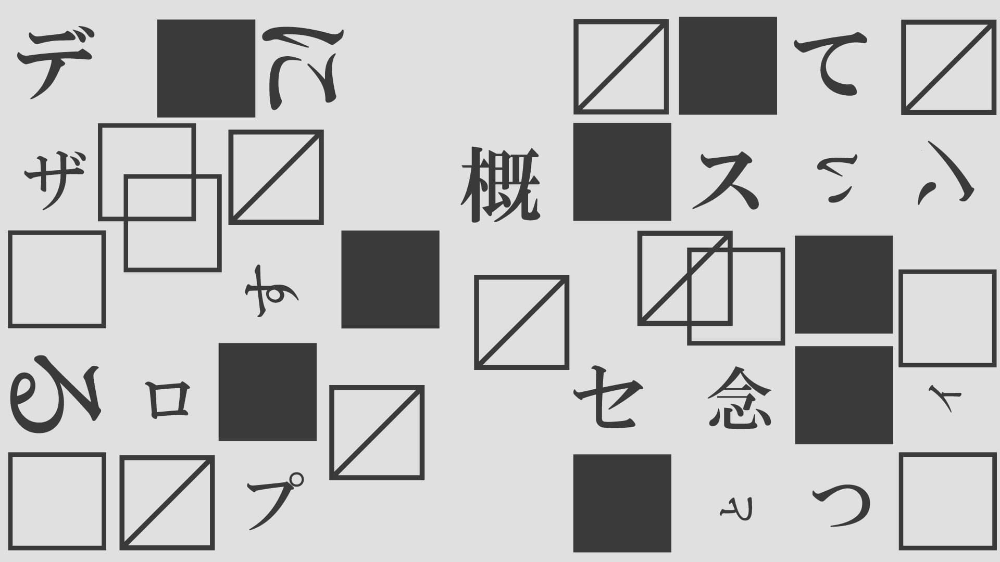

11月16日の講師
自然と数式とデザイン
小林 英雄
「株式会社 Nature Design Lab」代表
東京眼理大学で応用数学を専攻し、その後、自然と数式の美しさに魅了され、独自のデザイン哲学を追求するために修士課程に進学。
自然界のパターンや数学的な法則をデザインに取り入れる独自の手法を開発し、「Nature Design Lab」を設立。
このスタジオでは、学生たちに自然と数式の美しさを理解し、それをデザインに反映させる方法を教えている。
彼のデザインアプローチは、数学的な精度と自然の調和を追求するものであり、
プロセスにおいて数学の原理を活用し、自然の造形美を模倣することで、独自の視覚的言語を生み出している。
東京眼理大学で応用数学を専攻し、その後、自然と数式の美しさに魅了され、独自のデザイン哲学を追求するために修士課程に進学。
自然界のパターンや数学的な法則をデザインに取り入れる独自の手法を開発し、「Nature Design Lab」を設立。
このスタジオでは、学生たちに自然と数式の美しさを理解し、それをデザインに反映させる方法を教えている。
彼のデザインアプローチは、数学的な精度と自然の調和を追求するものであり、
プロセスにおいて数学の原理を活用し、自然の造形美を模倣することで、独自の視覚的言語を生み出している。